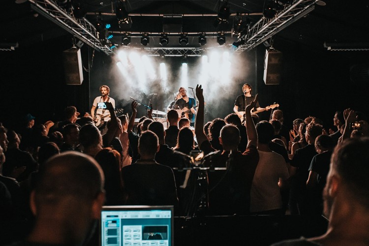

Radar er en musikvenue beliggende i Aarhus, kendt for at være et dynamisk og mangfoldigt samlingspunkt for live-musik og kulturelle oplevelser. Stedet ligger i det kreative miljø omkring Godsbanen og har en stærk profil som et intimt og innovativt spillested, der vægter kvalitet og eksperimenter højt. Radar er dedikeret til at præsentere både etablerede navne og spirende talenter fra ind- og udland. Genremæssigt spænder programmet bredt og inkluderer alt fra indie, elektronisk og jazz til mere eksperimenterende og nicheprægede udtryk. Det gør Radar til et attraktivt sted for både musikelskere og kunstnere, der søger noget ud over det sædvanlige. Et centralt element i Radars DNA er deres fokus på bæredygtighed og lokale samarbejder. De arbejder tæt sammen med byens kulturelle aktører, festivaler og kunstnere for at skabe unikke oplevelser. Samtidig lægger Radar vægt på at give plads til kunstnere, der udfordrer grænserne for musik og performance.